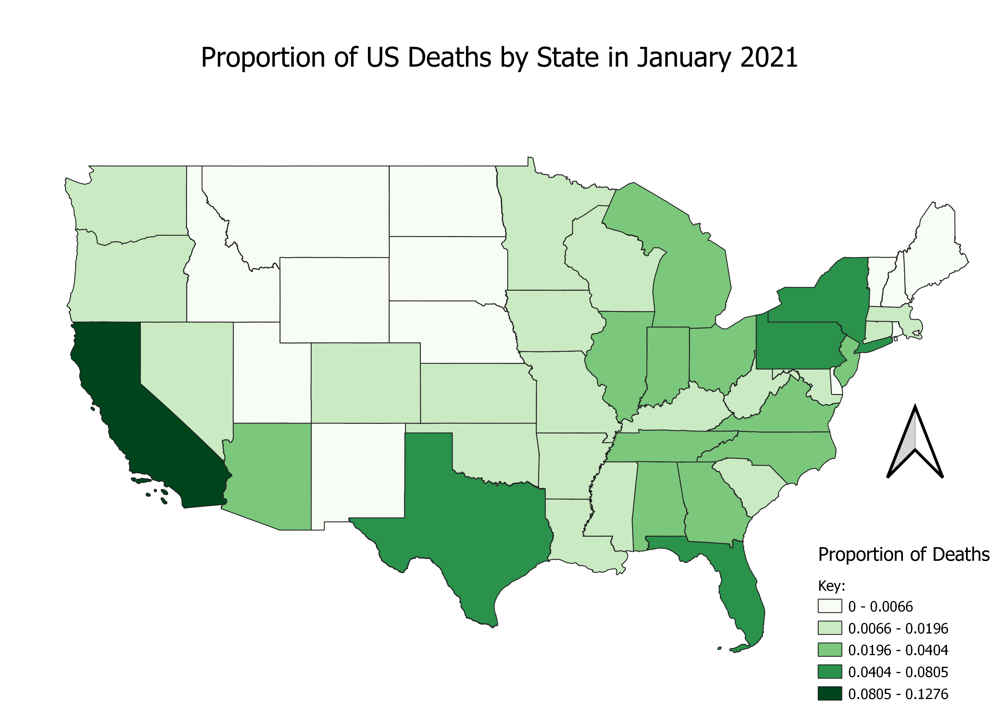

Homework 7: Choropleth Using New Data
Jason Kennedy

My map is a proportional map of US deaths for January 2021, so every state has a color showing the proportion of US deaths per state. I chose this topic because it was the first thing that came to mind, and it seemed easy enough.
Data used for this project
CSV dataset
Vector file as geoJSON
Data Source for CSV